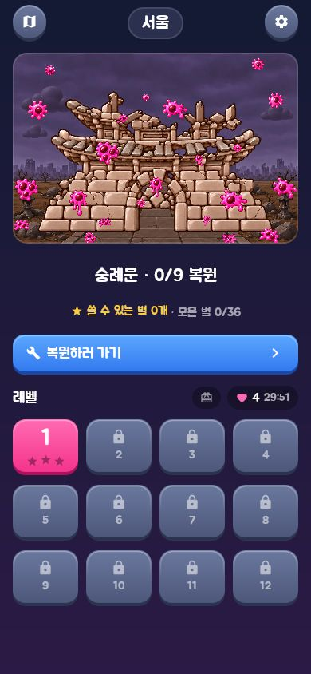
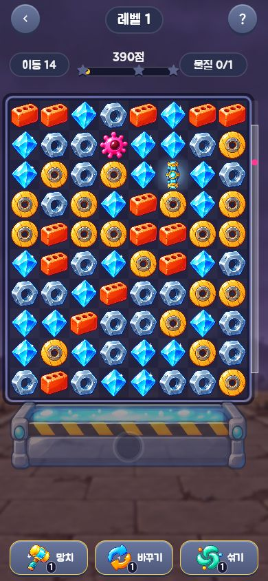
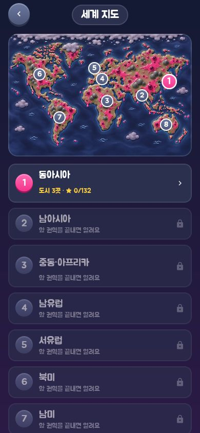

MATCH 3 & RESTORE
한 판을 깨면,
도시가 달라집니다.
퍼즐에서 모은 별이
도시의 풍경을 바꿉니다.
규칙은 익숙한 매치3 퍼즐에서 시작합니다. 같은 블록을 세 개 이상 맞춰 지우면, 그 사이로 오염 물질이 아래 수거함을 향해 내려갑니다. 길게 이어지는 보드에서 장애물에 맞춰 수를 고르고, 특수 블록을 조합하며 길을 열어갑니다.
레벨을 깨고 얻은 별은 랜드마크를 복원하는 데 쓰입니다. 한 부분씩 고칠 때마다 무너졌던 건물이 제 모습을 찾아갑니다. 한 도시의 레벨을 모두 깨면 다음 도시가 열리고, 세계 지도에도 정화한 흔적이 초록빛으로 남습니다.
- 여행의 규모
- 8개 권역 · 24개 도시 · 380개 정식 레벨
- 퍼즐의 변화
- 특수 블록 3종과 조합 6종
다양한 장애물과 아이템 3종 - 쌓이는 성취
- 레벨별 별과 점수 · 랜드마크 복원 · 다음 도시 열기
- 플레이 화면
- 세로형 화면 · 한국어와 영어
PLAY IN YOUR BROWSER
지금 웹에서 만날 수 있는 화면
서울에서 첫 퍼즐을 열고, 블록을 움직여 길을 내고, 다음 도시로 이어질 지도를 살펴봤습니다.



웹버전에서 직접 캡처했습니다. 화면을 누르면 크게 볼 수 있습니다.